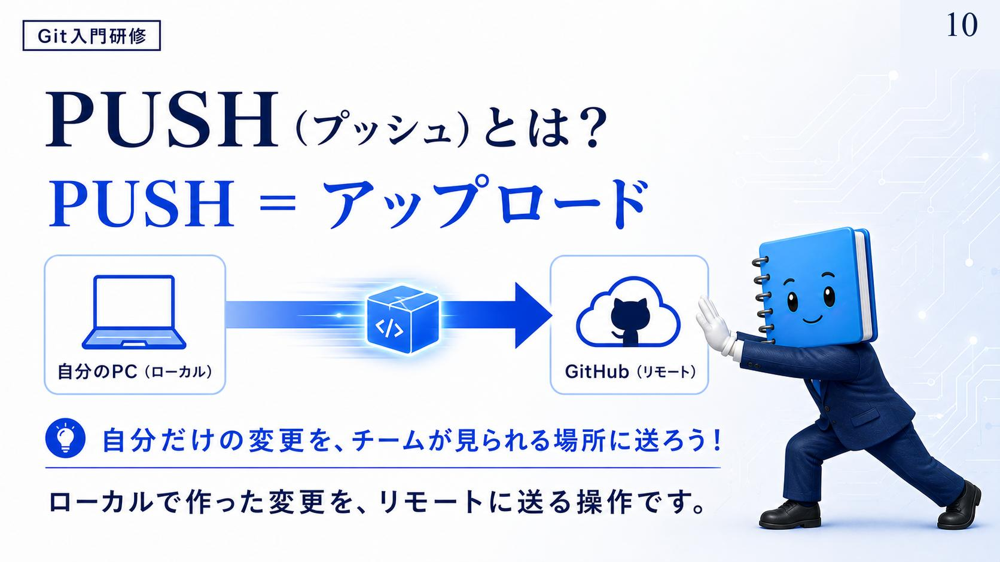
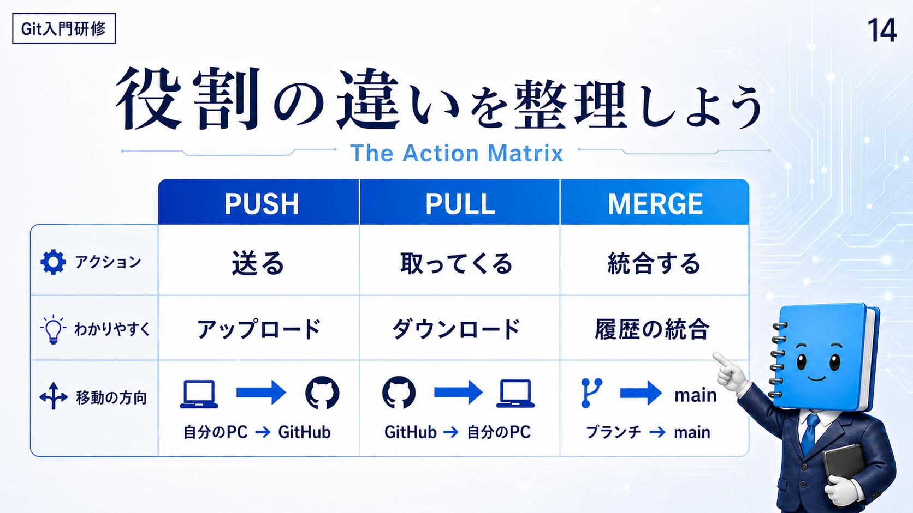
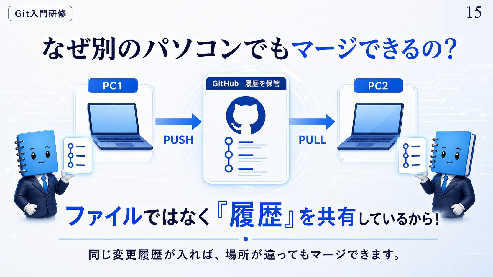

どこで作業する？ 空間のルール
資料は場所を2つに分ける。名前より、誰のための場所かのほうが本質になっている。
この線引きが引けていないと、次の2つの操作の向きが分からなくなる。手元は自分だけ、クラウドは全員。両者のあいだには双方向の矢印が引かれていて、その矢印にそれぞれ名前が付いている。
確認
資料がこの2つの場所を分けるときに使っている軸はどれか。
- 自分だけが作業する場所か、チーム全員が集まる場所か
- 保存できる容量が大きいか小さいか
- 履歴が残る場所か、残らない場所か
答え: A — 手元のパソコンは自分だけの場所、クラウド側はチーム全員の集合場所。
この向きの違いが、このあとの2つの操作の名前に対応する。
PUSH（プッシュ）とは？
資料は等号で片付ける。PUSH ＝ アップロード。定義は「ローカルで作った変更を、リモートに送る操作」で、向きは自分の PC（ローカル）→ GitHub（リモート）。
添えられている一言が、この操作の目的をよく表している——自分だけの変更を、チームが見られる場所に送ろう！ 手元でいくらコミットを重ねても、それは自分のパソコンの中にしかない。PUSH してはじめてチームの目に入る。

確認
手元でコミットを重ねただけでは足りず、PUSH が必要になるのはなぜか。
- コミットしただけでは、変更が自分のパソコンの中にしかないから
- コミットは一定の回数を超えると古いものから消えてしまうから
- コミットではファイルの中身が保存されないから
答え: A — 手元の保存とチームへの共有は別の操作になっている。
資料の言い方では「自分だけの変更を、チームが見られる場所に送る」のが PUSH。
PULL（プル）とは？
逆向きが PULL ＝ ダウンロード。定義は「リモートの最新変更を、ローカルに取り込む操作」で、向きはGitHub（リモート）→ 自分の PC（ローカル）。
こちらに添えられているのは「他の人が PUSH した変更を、自分の手元にも反映させよう！」。つまり PUSH と PULL は、同じ1本の道を反対向きに通る操作にすぎない。
確認
チームの誰かが GitHub に変更を送った。それを自分の手元に反映させるとき、使うのはどちら向きの操作か。
- クラウドから自分の PC へ取り込む向き
- 自分の PC からクラウドへ送る向き
- 枝を本線に合流させる向き
答え: A — リモートの最新変更をローカルに取り込むので、向きはクラウドから手元。
送る側と取ってくる側は、同じ道を反対向きに通っているだけになる。
役割の違いを整理しよう（The Action Matrix）
資料はここで、いったん3つを1枚の表に並べ直す。混同しやすいのは PUSH と PULL ではなく、この2つと MERGE のほう。前者は場所を動く操作で、後者は履歴を1つにする操作だからだ。
PUSH
アクションは送る。わかりやすく言えばアップロード。移動の方向は自分の PC → GitHub。
PULL
アクションは取ってくる。わかりやすく言えばダウンロード。移動の方向はGitHub → 自分の PC。
MERGE
アクションは統合する。わかりやすく言えば履歴の統合。移動の方向はブランチ → main。

確認
この表で MERGE だけが他の2つと違っているのは、どの行を見たときか。
- アクション。3つの中でこれだけが元に戻せない操作になっている
- 移動の方向。ローカルとリモートのあいだではなく、枝から本線への動きになっている
- わかりやすく言えばの行。3つの中でこれだけが英語のまま説明されている
答え: B — 2つは場所と場所のあいだを動く操作、1つは枝から本線へ履歴をまとめる操作。
この違いを押さえておくと、あとで開発フローを追うときに順番を取り違えにくくなる。
なぜ別のパソコンでもマージできるの？
ここで 01 の一行が回収される。A さんの PC と B さんの PC は別の機械なのに、なぜ変更を1つにできるのか。
資料の答えは「ファイルではなく『履歴』を共有しているから！」。図では PC1 →（PUSH）→ GitHub →（PULL）→ PC2 と流れていて、中央の GitHub には「履歴を保管」と書かれている。行き来しているのはファイルの現物ではなく、変更の履歴のほう。
だから結論はこうなる——同じ変更履歴が入れば、場所が違ってもマージできます。

01 で管理の対象を履歴だと決めたのは、覚え方の話ではなくこの性質のためだった。共有されているのが履歴なので、機械が変わっても同じ土台の上で統合できる。
確認
離れた2台のパソコンの変更を1つにできる理由として、資料が挙げているのはどれか。
- 2台が同じネットワークにつながっていて、常に同期しているから
- 片方のパソコンがもう片方の親機として動いているから
- やりとりしているのがファイルの現物ではなく、変更の履歴だから
答え: C — 中央に置かれているのは履歴で、PUSH と PULL はその履歴を運んでいる。
同じ変更履歴さえ入れば、場所が違っても統合できる、というのが資料の説明。
まとめ
PUSH は送る（アップロード）、PULL は取ってくる（ダウンロード）、MERGE は統合する（履歴の統合）。
場所と操作の対応が付いた。ただし、同時に進めた2つの変更が同じ場所を触っていたときには、統合がすんなり終わらない。次の回はその状況——コンフリクトを見る。